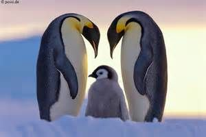
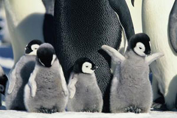
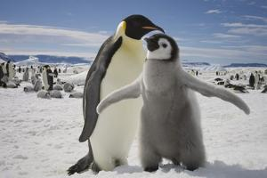

Pingouin ([pɛ̃.ɡwɛ̃]) est un nom vernaculaire porté en français par deux espèces d’oiseaux de la famille des Alcidés, dont la seule espèce encore vivante est le Petit Pingouin. Ces espèces vivent dans l’hémisphère nord, cherchant leur nourriture dans les eaux maritimes et océaniques froides. On peut rencontrer le Petit Pingouin de l'Arctique jusqu’en Méditerranée occidentale et sur les côtes atlantiques du Maroc en passant, par exemple, par la Bretagne. Ce dernier vole, alors que le Grand Pingouin, espèce éteinte en 18441, ne le pouvait pas.
Dans le langage courant, le mot « pingouin » désigne souvent des manchots de manière abusive, notamment dans la culture populaire.



Confusion habituelle
Par abus de langage, les manchots (des oiseaux de la famille des sphéniscidés qui vivent dans l’hémisphère sud et ne volent pas) sont souvent désignés sous le terme de « pingouins ». La principale raison de cette confusion est la ressemblance avec la plus grande des deux espèces de pingouin, le Grand Pingouin.
Une autre source d’erreur est la parenté étymologique entre le mot français pingouin et celui désignant les manchots dans d'autres langues européennes comme penguin en anglais, pingüino en espagnol, Pinguin en allemand, pinguino en italien, пингвин (pingvin) en russe, pinguïn en néerlandais, ou encore pinguim en portugais.
Dans de nombreuses langues, deux termes différents sont utilisés pour désigner les deux espèces de pingouin, ce terme n’a donc pas de traduction exacte. En anglais, le terme Great Auk désigne le Grand Pingouin, auk étant un terme générique désignant le plus souvent l’ensemble des alcidés. Le Petit Pingouin est quant à lui appelé razorbill. En catalan ou en italien, respectivement les termes de gavot et alca sont en revanche utilisés comme en français pour désigner les deux espèces.